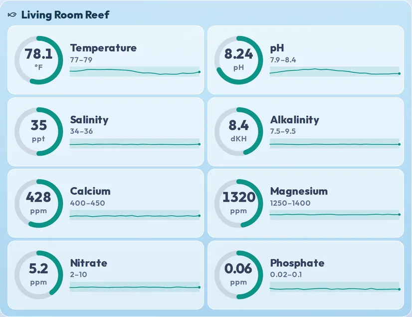
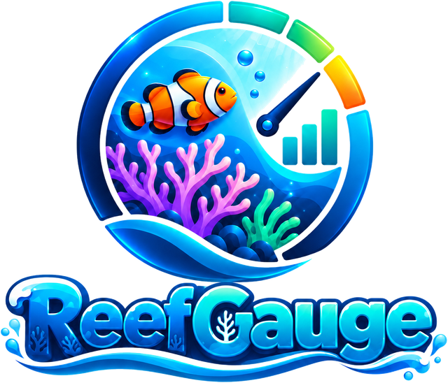
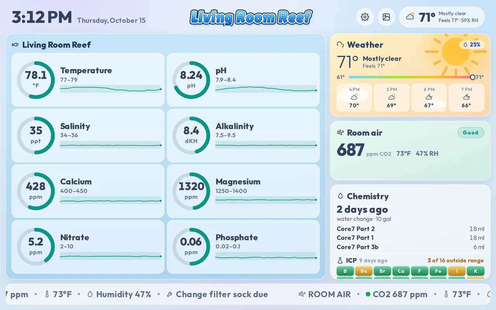
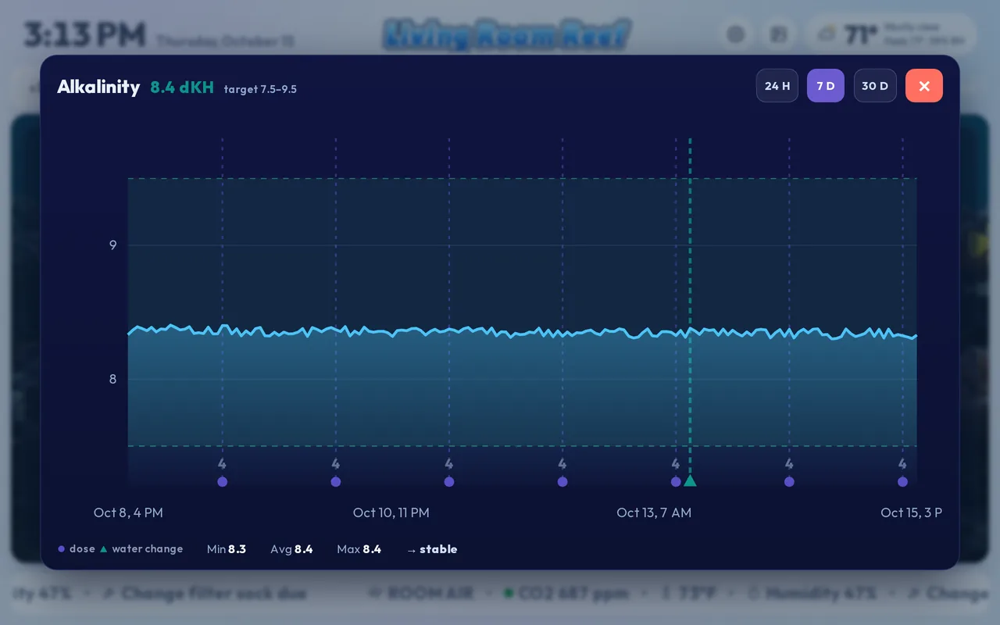
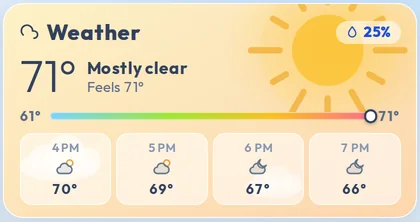
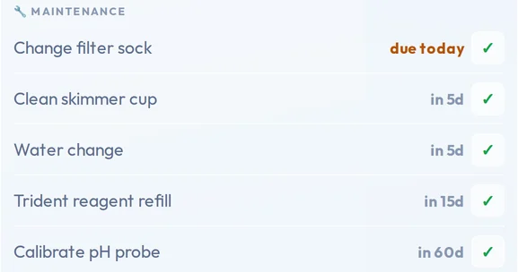
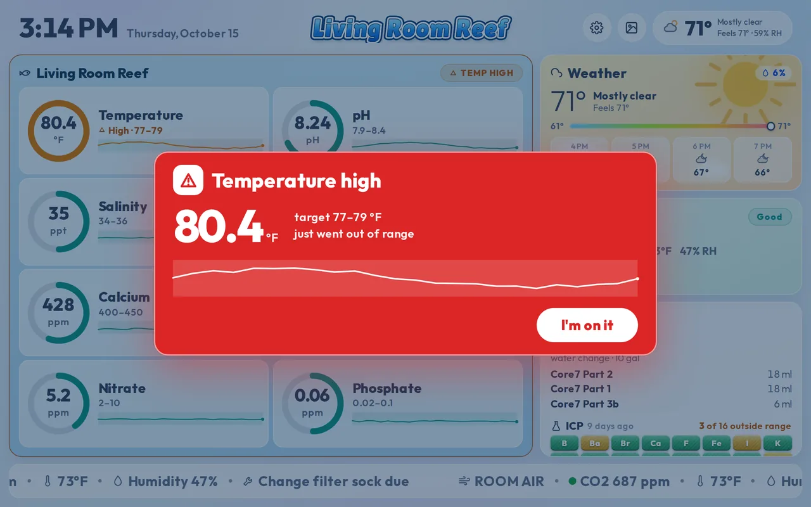
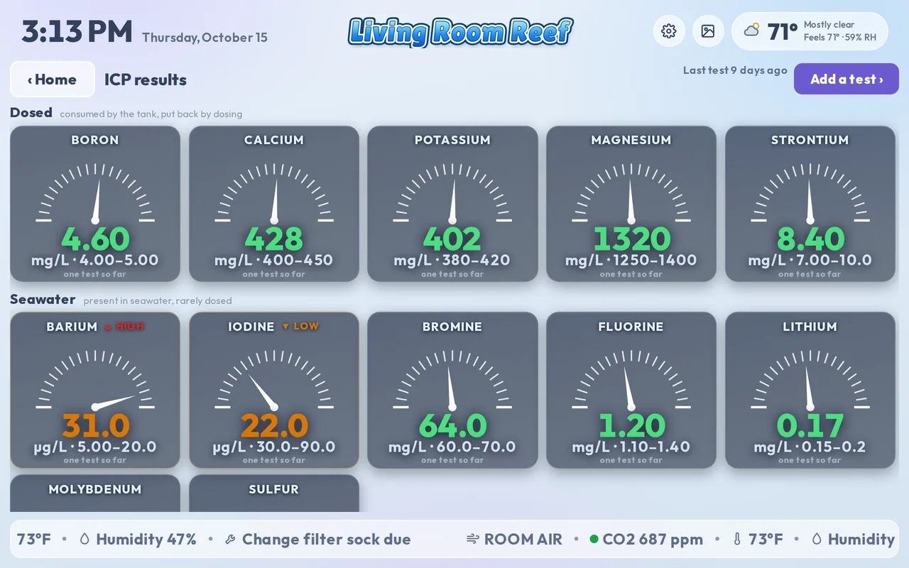
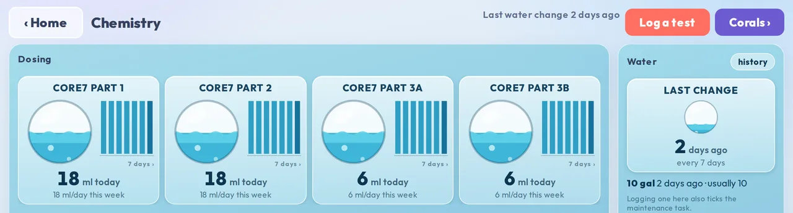

Every number, with its range and its day.
Each reading sits beside its target range and a line of its last 24 hours, so a slow drift shows up before it becomes a problem.


Coming early 2027: The launch list hears the introductory price first
A 10-inch touchscreen for the wall beside your reef aquarium. It reads your controller, your automated tester and your ICP results, and shows the whole reef the moment you walk in.

Reads the gear you already own
Temperature, pH, salinity, alkalinity, calcium, magnesium, nitrate and phosphate as ring gauges, each with its target range and a 24-hour trend line underneath. Green when it's right, amber when it's drifting, red when it isn't.
Each reading sits beside its target range and a line of its last 24 hours, so a slow drift shows up before it becomes a problem.

The last 24 hours, 7 days or 30 days, with the target band, every dose and water change marked along the bottom, and the low, average, high and direction underneath.

Outside, the local forecast, because a storm on the way is a power cut on the way. Inside, a room-air sensor watches the CO2 the tank breathes — high room CO2 pulls pH down — alongside temperature and humidity.

Filter socks, skimmer cup, water changes: due jobs show on the ticker along the bottom of the screen, and a tap ticks them off. Log a water change and its reminder resets too.

When a reading from your controller leaves its range, a pop-up takes over the screen and the speakers sound.

Paste your lab's results from your phone. Twenty-plus elements are shown against natural-seawater reference bands, with anything outside them flagged, and you see what it read before it saves.

Log doses and water changes on buttons named for what you actually use — two-part, Balling, kalkwasser, Red Sea Foundation, Triton Core7, ESV B-Ionic, All-For-Reef, Reef Moonshiners — and keep the whole history together.

ReefGauge talks to the gear on your network directly, with no cloud in the middle.
Temperature, pH and salinity from your Apex probes, plus Trident and Trident NP results as they land — alkalinity, calcium, magnesium, nitrate and phosphate.
Over your own network: ReefMat roll remaining and ReefRun pump state — skimmer cup full? You'll know. ReefDose, ReefATO+, ReefLED and ReefWave show their basic status.
Paste your lab's results from your phone, and see every element against its seawater reference band, with anything outside it flagged.
CoralVue HYDROS (through its official API, which needs the internet) and GHL ProfiLux 4 (over your network) are planned.
On the roadmapMount it on the wall beside the tank and plug it in. It boots straight to your reef: no desktop, no login, no cursor.
Wi-Fi, location, tank name, controller and equipment, in about five minutes, on the screen itself.
Every number, every trend, and an alert that's hard to miss when something is wrong.
You buy the display, it's yours, and it never needs a subscription.
Software updates are free and install from the settings screen.
Your tank's numbers stay on your own network unless you start a support session. What leaves the display
Your controller, your ReefBeat gear and the display talk over your own network. If the internet goes down, the reef screen keeps working.
No, but it's the best case. With an Apex and Trident the numbers arrive on their own. Without a controller you type in your test-kit results: they color the gauges and go on the charts (typed results don't sound alarms). You still get ICP results, the dosing log, maintenance reminders and the weather.
For the weather, registration, software updates and a remote-support session you start yourself. Your controller, your ReefBeat gear and the display talk over your own network; if the internet goes down the reef screen keeps working.
No. You buy the display, it's yours, and it never needs a subscription. Software updates are free and install from the settings screen.
Not yet. Viewing your tank from your phone is planned for after launch.
HYDROS and GHL are planned. If you run something else, tell us what — the list of what people own decides what comes after.
Early 2027. One price, no subscription; the price is still to be announced. The launch list hears first, and hears about the introductory price.
Launch news, the introductory price, and a first look at the display on the wall.